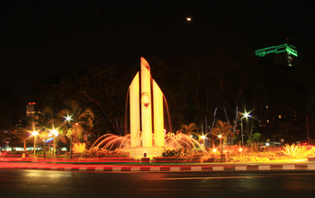
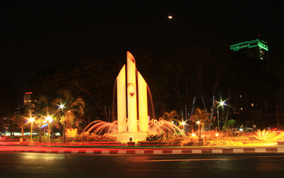

Sparkling Surabaya
Surabaya Has A Story
 

Surabaya is my hometown. In Surabaya, I have experienced many joys and sorrows in various places.
Either from food that I can't leave behind, or from places that hold memories in my life. Surabaya is a city full of miracles, from when I was born, until now I studied at one of the public universities in Surabaya.
Surabaya is my hometown. In Surabaya, I have experienced many joys and sorrows in various places. Either from food that I can't leave behind, or from places that hold memories in my life. Surabaya is a city full of miracles, from when I was born, until now I studied at one of the public universities in Surabaya.
Surabaya is known as the City of Heroes because of its history which was taken into account in the struggle of Arek-Arek Suroboyo (Surabaya youths) in defending the independence of the Indonesian nation from invaders.
More about hometown

Lontong Balap is one of the foods that I really like in my hometown. Lontong Balap is very easy to find, it can pass in front of the house. There is a distinctive aroma and delicious taste when you enjoy a plate of "Lontong Balap" typical of Surabaya. Lontong Balap is an authentic food from Surabaya, which has a unique story behind the name "Lontong Balap". More about foods
One of the most meaningful places to me in Surabaya is the Klenteng Sanggar Agung. Every year my family and I come to sow flowers in the kenjeran sea. We pray and commemorate the day our family members died. But the Klenteng Sanggar Agung is also a great tourist spot that you shouldn't miss. More about tourist
One of the key reasons to come to Surabaya is for the chance to check out an authentic slice of city life in Indonesia away from the major tourist hubs and you can also spend time eating your way around the city which is known for a clutch of signature dishes. So, let's come and explore my beautiful hometown, Surabaya!